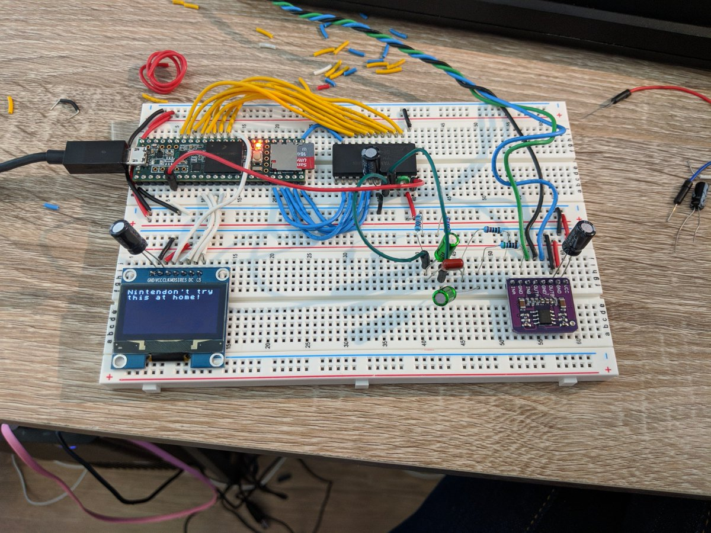
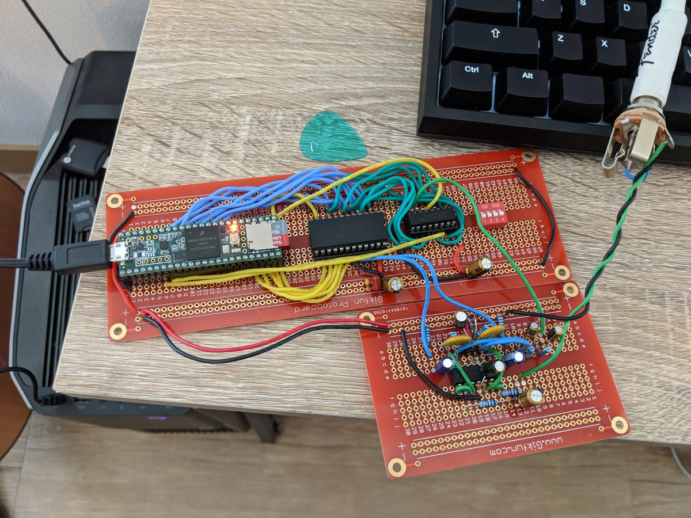
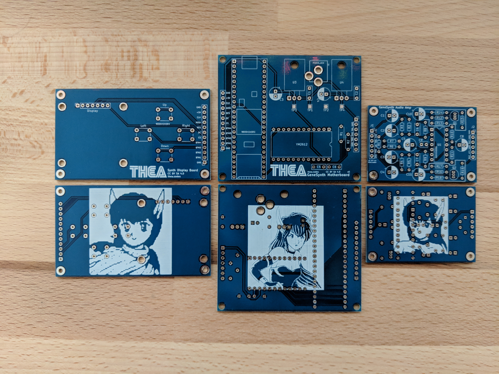

Genesynth: A Sega Genesis-inspired synthesizer
My largest side project over the last year has been the Genesynth - an open-source hardware synthesizer inspired by the Sega Genesis / Mega Drive. It started with a crazy idea and amazingly ended up with a functional, incredible sounding synthesizer.

While I'm not totally done with the project, it's close enough for me to really share it with the world. This post introduces you to this synthesizer and how I built it. Feedback is always welcome, and I would especially love to know which technical details you'd like me to go into in future blog posts.
The inspiration
As noted in my first build log about the Genesynth, I grew up listening to Sega Genesis music and it left a permanent impression on me. The Genesis was one of the last consoles to feature a synthesizer chip instead of the samplers and CD playback that later consoles would adopt. It used an (at the time) relatively advanced FM synthesizer chip from Yamaha, the YM2612. The Genesis gave us some of the most iconic game soundtracks, and they were all brought to life using this chip's distinct voice.
For these reasons, I set out to re-create this sound in a hardware synthesizer.
The modern-day recreation of Genesis sound
The Genesynth uses the same YM2612 6 voice FM synthesis chip as the one used for the Sega Genesis. A Teensy 3.5 interfaces between the chip and MIDI-over-USB providing real-time control of all of the chip's parameters, patch loading, and various polyphony modes.
The synth features a high-quality audio amplifier that far exceeds the original Genesis version while retaining the same filter roll-off. This means that you can hear the chip's 9-bit DAC's distortion, or the so-called "ladder effect" quite clearly, such as during the long sustain parts in these clips:
Because all of the parameters are exposed over MIDI you can build things like Ctrlr panels to control the parameters in real-time:

Because I'm super bored tonight here's some more synth noodling.
— Thea Flowers 🌺 (@theavalkyrie) January 19, 2019
I've got basically all of the parameters exposed to Ableton now. :)
The envelopes on this thing are actually quite usable once you get the hang of it. Some super fun sounds can happen with envelopes + unison. pic.twitter.com/dKdxrvlUK2
Creating the Genesynth
Creating this project took weeks of research, months of iteration, and nearly a year of programming. This is the first synthesizer I've ever built, and my first real hardware project. I even learned how to make PCBs for this project! There were so many difficult areas and times that I felt like abandoning it but every breakthrough meant I got to hear more cool sounds come out of these magic rocks. This positive feedback loop kept me encouraged to continue the project.
My original version of the hardware was created on breadboards and had no MIDI functionality, just VGM playback:

It eventually moved to more permanent protoboards:

And then finally, in order to have the best possible audio quality, I ended up creating custom PCBs:

And just last week I finally placed everything into a laser-cut acrylic case:

The software went through several iterations as well. As mentioned, it initially just had VGM playback - as there was a lot of prior art I could draw from there. Eventually, once I was able to verify my timing and hardware was functioning, I began implementing patch loading and MIDI functionality. Finally, I started coding a simple user interface for loading patches and displaying parameter states when being controlled over midi.
It now shows the FM algorithm used by the current patch!
— Thea Flowers 🌺 (@theavalkyrie) October 18, 2018
(This was a lot of code to do. Basically manually drawing all these little graphs) https://t.co/Nj9GdJz9y3 pic.twitter.com/0OnhmCOqrk
Creating your own
Genesynth is open-source hardware. Everything I put into creating this is available on my GitHub at https://github.com/theacodes/genesynth. I would love to see other people build these and I would love feedback if you do.
If you're more interested in just buying one, I wouldn't recommend offering me money to build an incomplete side project for you - I would recommend the DAFM synthesizer instead.
Read more
I've written other blog posts about the build process:
There's also a big Twitter Moment that collects all of my Tweets about this project. Finally, there's a post on /r/synthdiy.
Thanks
I would like to specifically thank the follow people for their help and encouragement during this project:
- Gus Class for reviewing this post and always being enthusiastic about this project.
- Aidan Lawrence who's previous work in this area was invaluable to me, but they also went out of their way to answer questions and provide me with translations of Japanese documentation.
- The pseudonymous creators of the Mega Amp mod for the Sega Genesis.
- Maxim's World of Stuff has the most complete documentation on the YM2612 and none of this would've been possible without it.
- Aly James' FMDrive provided the basis for patch saving and loading.
- The /r/synthdiy and /r/askelectronics communities on Reddit. Both were helpful and encouraging during this process.